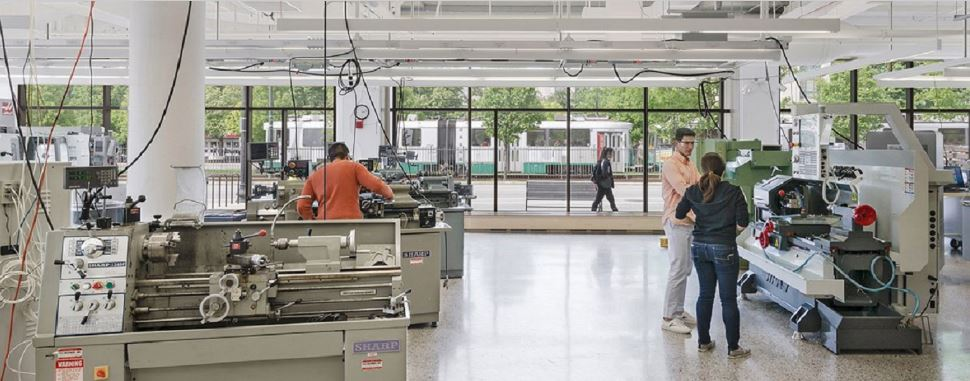
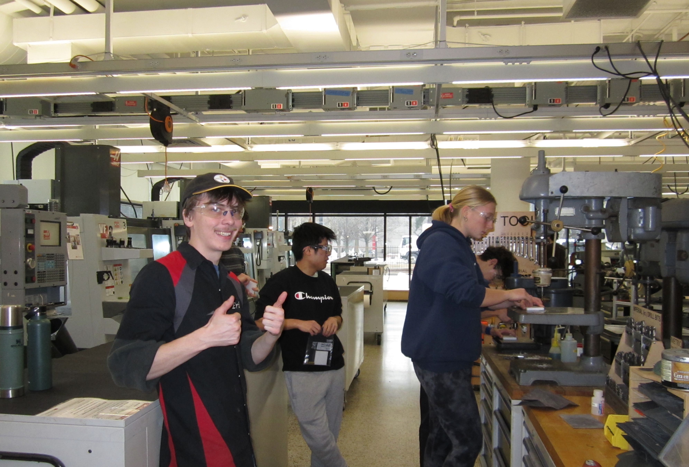
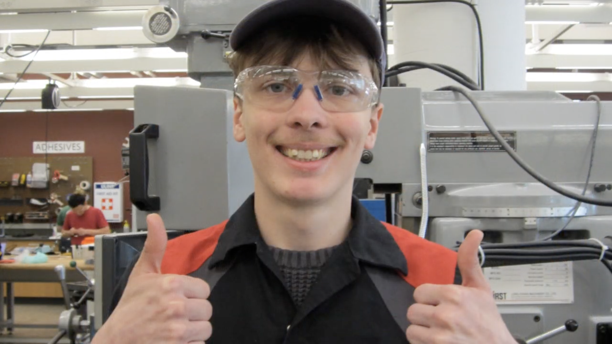
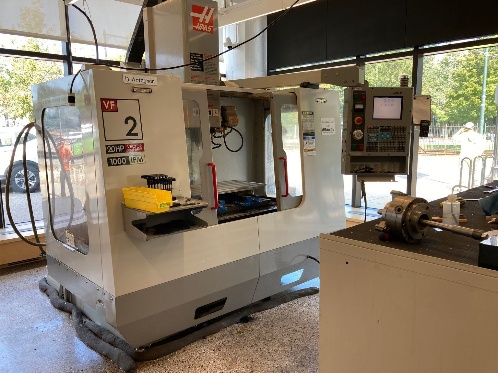
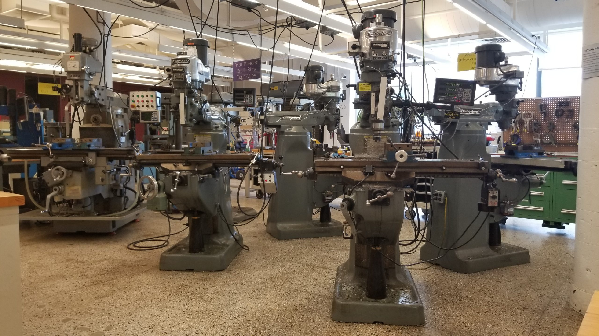
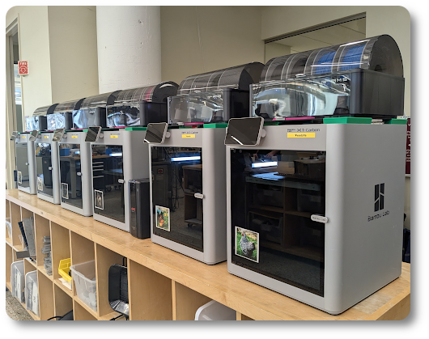

Engineering Product Innovation Center (EPIC)
Lab Assistant • Boston University

Overview
Boston University’s Engineering Product Innovation Center (EPIC) is a hands-on prototyping and fabrication environment that supports student design, manufacturing, and iterative product development. As a lab assistant, I help students move from concept to physical prototype by supporting fabrication workflows, answering process questions, and helping them use equipment safely and effectively.
The role has strengthened my understanding of how design choices affect manufacturability, setup, iteration speed, and assembly. It has also given me experience working across a wide range of tools and processes in a collaborative shop environment. EPIC also includes the Automated Design and Manufacturing Laboratory (ADML), which supports more advanced automation and manufacturing-system project work.
EPIC in Practice


Responsibilities
- Support students during prototyping and fabrication across machining, additive manufacturing, and cutting processes
- Guide safe setup and operation of fabrication equipment during student project work
- Troubleshoot issues related to geometry, tooling, print setup, fixturing, and assembly
- Help students choose appropriate manufacturing processes for their design constraints
- Maintain a safe, organized, and efficient lab environment while supporting daily operations
Fabrication Capabilities
Through my work at EPIC, I’ve supported student projects across machining, additive manufacturing, laser-based fabrication, and general shop workflows. The lab environment has given me exposure to both the technical and practical sides of physical product development. A full list of EPIC fabrication equipment can be found on the BU EPIC equipment page →
CNC Machining
- CNC milling workflows
- CAM-based part production
- Fixture setup and machining support
- Prototype components in metal and plastic
Manual Machining
- Bridgeport milling workflows
- Manual lathe operations
- Part modification and refinement
- Hands-on machining support
Additive Manufacturing
- FFF / SLA 3D printing
- Print setup and troubleshooting
- Rapid prototype iteration
- Basic post-processing and cleanup
2D Fabrication & Forming
- Laser cutting and engraving
- Waterjet 2D cutting
- Sheet metal cutting and forming
- Material preparation and flat-part production
Shop Support & Iteration
- Fabrication method selection
- Assembly support
- Prototype refinement
- Process-based troubleshooting
Automation & Manufacturing Systems
- Exposure to ADML workflows
- Automated manufacturing system concepts
- Multi-step fabrication planning
- Manufacturing cell-based project support
Equipment & Lab Environment




How the Role Strengthened My Engineering Perspective
Manufacturing Awareness
Working in EPIC has strengthened my understanding of design for manufacturing by showing how real fabrication constraints affect part geometry, setup decisions, tolerances, and the speed of iteration. Supporting many different student projects has made me more thoughtful about choosing processes that are both practical and efficient.
Technical Communication
Helping students who are new to machining or prototyping has reinforced the importance of clear communication, patience, and process-based problem solving. It has also improved my ability to explain manufacturing decisions in a hands-on engineering environment.